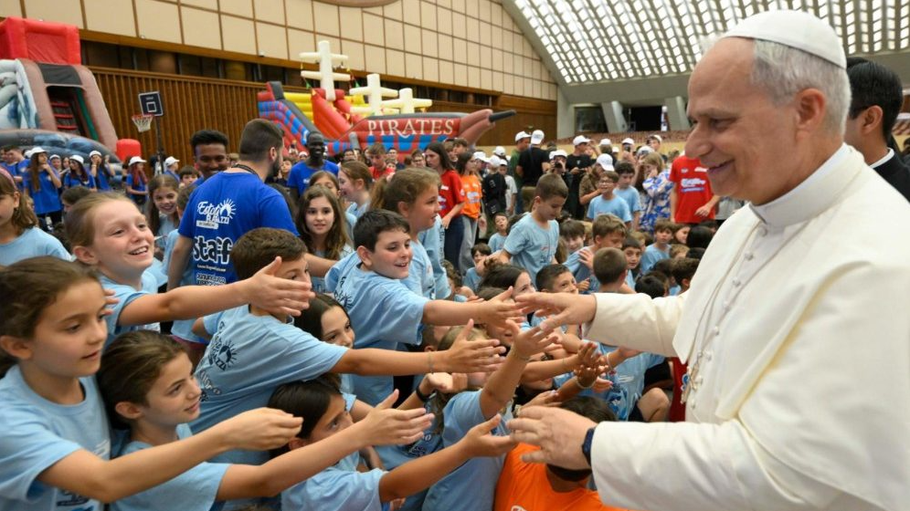
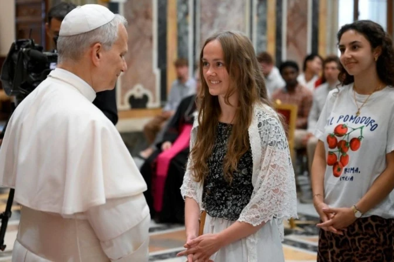

La importancia de escuchar, acompañar y construir un futuro mejor
Los jóvenes tienen un lugar importante en la vida de la Iglesia, porque representan nuevas ideas, esperanzas y desafíos para el futuro. León XIV busca transmitirles mensajes de fe, paz, solidaridad y compromiso con los demás. Su acercamiento invita a los jóvenes a participar activamente en sus comunidades y a no tener miedo de expresar sus inquietudes.

Para acompañar a los jóvenes es importante conocer sus preocupaciones, sus proyectos y las dificultades que enfrentan. El diálogo permite construir relaciones de confianza y comprender distintas formas de pensar.
La Iglesia puede ser un espacio de encuentro donde los jóvenes se sientan escuchados, acompañados y valorados.
León XIV transmite la importancia de mantener la esperanza y de vivir la fe a través de las acciones cotidianas. Sus mensajes invitan a mirar el futuro con confianza y a trabajar por una sociedad más justa y solidaria.
Estos valores pueden ayudar a los jóvenes a encontrar motivación para sus proyectos personales y para colaborar con otras personas.

La solidaridad es una forma concreta de poner en práctica los valores cristianos. Participar en actividades comunitarias, acompañar a quienes lo necesitan y colaborar con proyectos sociales son maneras de contribuir al bienestar de los demás.
Los jóvenes pueden aportar sus ideas, su tiempo y sus capacidades para generar cambios positivos en sus comunidades.
Durante su visita a la Argentina, León XIV tiene prevista una vigilia con jóvenes el 10 de noviembre de 2026, en el Monumento de los Españoles, en Buenos Aires.
Este encuentro será una oportunidad para compartir un momento de oración y escuchar su mensaje dirigido especialmente a los jóvenes.